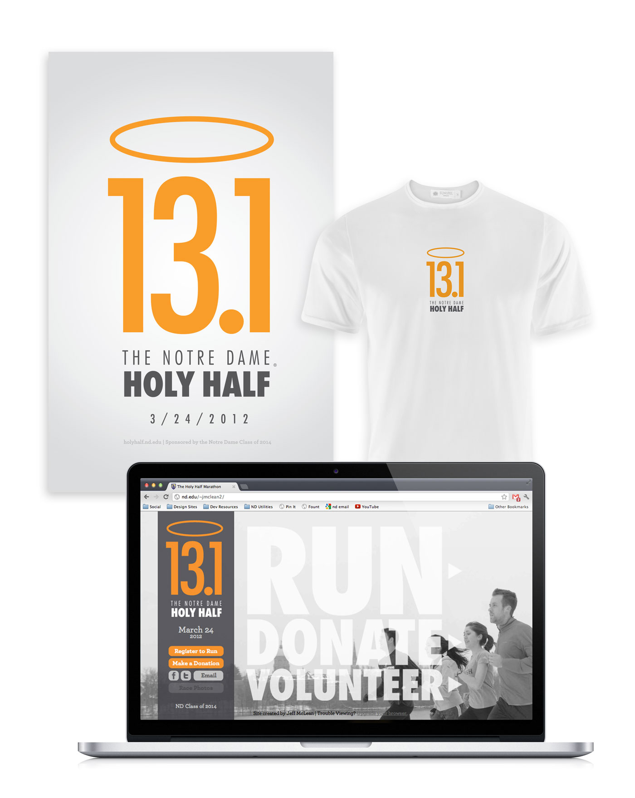
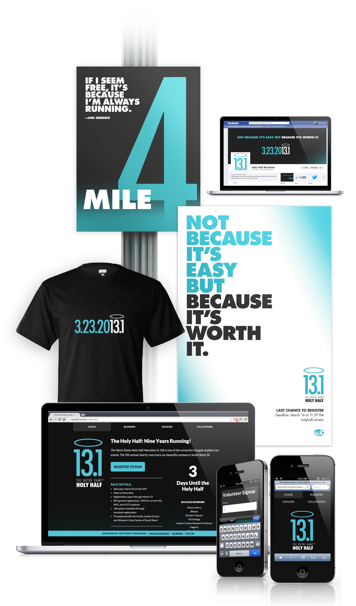

After a disastrous 2011 event, this annual 1,300 person charity race at the University of Notre Dame had to prove itself in 2012 to avoid permanent cancellation. A new team took over the event and brought me on to give the race more visibility and legitimacy in the community. I prioritized a graphic identity and a website, building both in the 8 weeks before race registration opened.
These materials helped our team register over 1,300 runners, bringing over $30,000 in profit to be donated to local charities.
Our success in 2012 led us to be rolled into a larger student planning organzation, which had specific requests for changes in the next year's design direction. The website also had to be rebuilt to be usable on phones: 40% of web traffic ended up coming from mobile devices on race day.
Our collective efforts raised over $35,000 in charity profit in 2013. The race has continued to thrive since being passed on to the next generation of students.